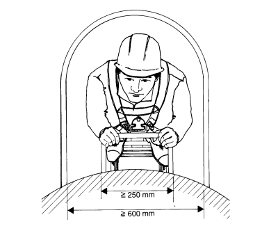
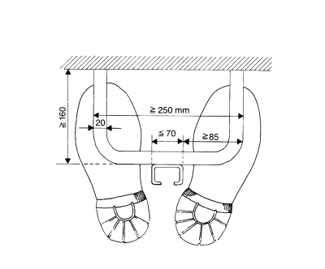

4.2.1 Führungsschienen dürfen mittig auf Steigeisengängen nur dann befestigt werden, wenn
4.2.2 Die Auftrittsbreite von 85 mm muß an jeder Stelle im Steigeisengang vorhanden sein und darf nicht durch hervorstehende Schrauben, Verbindungsmittel oder ähnliches eingeschränkt sein.
4.2.3 Steigeisen müssen ausreichend tragfähig sein.

Bild 2: Steigeisen mit Ruheschutzbügel

Bild 3: Anordnung Steigschutzschiene am Steigeisen
4.2.4 Die Befestigungskonstruktion zwischen Führungsschiene und Steigeisen ist rechnerisch für eine statische, in senkrechter Richtung wirkende Ersatzlast von 5 kN nachzuweisen.